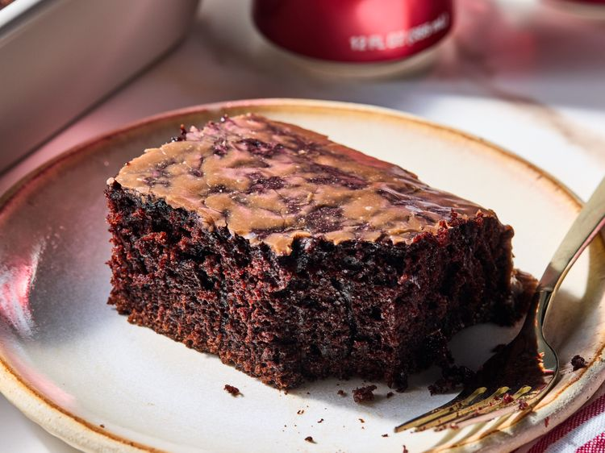

Home
Dr. Pepper Sheet Cake Recipe

Ingredients
Cake
- 2 cups sugar
- 1 3/4 cups all purpose flour
- 3/4 cup unsweetened cocoa powder
- 1 teaspoon baking powder
- 1 teaspoon baking soda
- 1 teaspoon salt
- 2 large eggs
- 1 cup Dr. Pepper
- 1/2 cup milk
- 1/2 cup vegetable oil
- 2 teaspoons vanilla extract
- 1 cup boiling water
Glaze
- 1/4 cup butter
- 1 tablespoon unsweetened cocoa powder
- 5 tablespoons Dr. Pepper, divided
- 2 1/4 cups powdered sugar
Steps
-
Gather all ingredients. Preheat the oven to 350 degrees F (175 degrees
C) and grease a 9x13-inch baking pan.
-
For cake, stir together sugar, flour, cocoa powder, baking powder,
baking soda and salt in a large bowl.
-
Add eggs, Dr. Pepper®, milk, oil and vanilla. Beat with an electric
mixer for 2 minutes on medium speed.
- Stir in the boiling water. The batter will be thin.
-
Transfer batter to prepared pan. Bake until a toothpick inserted in the
center comes out clean, 30 to 35 minutes.
-
Let the cake cool in the pan on a wire rack for at least 30 minutes.
-
For glaze, combine butter, cocoa powder and 3 tablespoons Dr. Pepper®
in a medium saucepan. Cook and stir over medium high heat until mixture
is boiling. Remove from heat.
-
Whisk in powdered sugar until well blended, smooth, and creamy, about 2
minutes. Stir in the remaining 2 tablespoons Dr. Pepper to make a smooth
glaze.
-
Pour glaze over cooled cake and let set for 1 hour before serving.